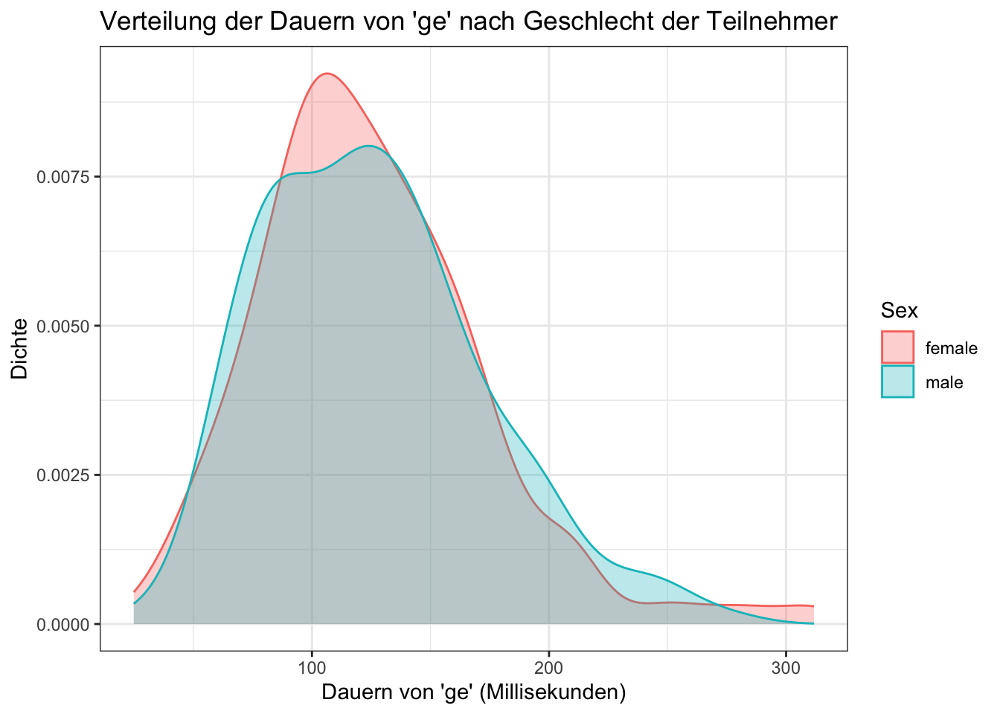

| Variable | Beschreibung |
|---|---|
| Word | ein Faktor mit den Wörtern als Ebenen |
| Frequency | ein numerischer Vektor mit der absoluten Häufigkeit des Wortes im Spoken Dutch Corpus |
| Speaker | ein numerischer Vektor mit der absoluten Häufigkeit des Wortes im Spoken Dutch Corpus |
| Sex | ein Faktor mit den Lautsprechern als Ebenen |
| YearOfBirth | ein numerischer Vektor mit Geburtsjahren |
| DurationOfPrefix | ein numerischer Vektor mit der Dauer des Präfixes -ge in Sekunden. |
| SpeechRate | ein numerischer Vektor, der die Sprechgeschwindigkeit in Anzahl der Silben pro Sekunde kodiert |
| NumberSegmentsOnset | ein numerischer Vektor, der die Sprechgeschwindigkeit in Anzahl der Silben pro Sekunde kodiert |
6 Bericht 1
Konsolidierung der neuen Kenntnisse
Dieser Bericht dient dazu, das bisher Gelernte zu wiederholen und zu festigen. Ihre Aufgaben umfassen das Laden von Paketen und Daten sowie eine leichte Datenverarbeitung (Kapitel 6.2). Außerdem werden Sie 4 Diagramme erstellen (Kapitel 6.3) und eine kurze Interpretation zu einem der Diagramme schreiben (Kapitel 6.4).
Ein Tipp: Ich empfehle Ihnen, Ihr Dokument häufig zu rendern, um eventuelle Fehler frühzeitig zu erkennen.
Sie müssen nur das Quarto-Skript einreichen, das auf meinem Rechner gerendert werden sollte (wenn es auf Ihrem gerendert wird, sollte es auch auf meinem gerendert werden).
6.1 Einrichtung
6.1.1 Quarto
Öffnen Sie ein neues Quarto-Skript und speichern Sie es als nachname_vorname_bericht1.qmd. Ändern Sie das YAML so, dass es einen:
- einen aussagekräftigen Titel
- Ihren Namen als
Autor - ein Inhaltsverzeichnis
Achten Sie darauf, Code Chunks, Prosa und Überschriften zu verwenden, um Ihre Aufgaben angemessen zu dokumentieren. Eine gute Faustregel ist, für jede (Unter-)Überschrift in diesem Dokument eine Überschrift hinzuzufügen.
6.1.2 Pakete
Laden Sie die Pakete tidyverse und languageR ein.
6.1.3 Daten
Der Datensatz durationsGe aus dem languageR-Paket (Baayen & Shafaei-Bajestan, 2019) enthält Dauermessungen zur niederländischen Vorsilbe ge. Eine Beschreibung aller Variablen des Datensatzes findet sich in Tabelle 6.1. Ihre Aufgabe ist es:
- Speichern Sie den Datensatz als Objekt
df_gein Ihrer Umgebung (dies kann auf die gleiche Weise geschehen wie bei allen Datensätzen, die wir bisher verwendet haben) - Drucken Sie die ersten 10 Zeilen des Datensatzes mit der Funktion “head()” aus.
6.2 Data wrangling
Hier werden Sie die dplyr-Verben aus Woche 4 verwenden. Denken Sie daran, dass Sie den Zuweisungsoperator (<-) nur verwenden müssen, wenn Sie die Änderungen, die Sie vornehmen, als Objekt in der Umgebung speichern wollen. Wenn Sie diese Änderungen nur ausdrucken wollen, brauchen Sie den Zuweisungsoperator nicht.
6.2.1 Subsetting
Drucken (aber nicht in Ihrer Umgebung speichern) Sie die Zeilen von df_ge, in denen SpeechRate über 9 liegt, nur mit den Spalten word, speaker und SpeechRate. Es sollten 5 Zeilen sein.
6.2.2 mutate()
Fügen Sie eine neue Variable hinzu, duration_ms, die DauerVonPräfix multipliziert mit 1000 (DurationOfPrefix*1000) entspricht. Dies entspricht der Dauer von ge in Millisekunden, statt in Sekunden. Stellen Sie sicher, dass Sie diese neue Variable in Ihrem Datenrahmen speichern (Hinweis: Sie müssen den Zuweisungsoperator <- und das dplyr-Verb mutate() verwenden).
6.2.3 Fehlersuche
Warum läuft dieser Code nicht? Es gibt zwei Probleme mit dem Code, identifizieren und beheben Sie sie.
## Troubleshooting
df_ge |>
filter(YearOfBirth == 1978) +
select(Frequency, word)6.3 Datenvisualisierung
Verwenden Sie für alle Diagramme labs(title = "..."), um entsprechende Diagrammtitel hinzuzufügen.
Optional: Ändern Sie die x und y Achsenbeschriftungen, wenn Sie wollen, mit labs(x = "...", y = "..."). Vielleicht möchten Sie auch ein Thema hinzufügen (z.B. theme_minimal()).
6.3.1 Scatterplot
Erstellen Sie ein Streudiagramm mit SpeechRate (x-Achse) und DurationOfPrefix (y-Achse), mit YearOfBirth als Farbe (colour). Ändern Sie die Einstellungen für den Codechunk so, dass das Diagramm beim Rendern des Skripts nicht gedruckt wird, der Code aber schon. Tipp: Sie müssen #| eval: verwenden.
6.3.2 Facetten
Fügen Sie Facetten für Sex hinzu (denken Sie daran, die Tilde ~ einzufügen). Ändern Sie die Code-Chunk-Einstellungen so, dass die Darstellung gedruckt wird, wenn das Skript gerendert wird, aber der Code nicht (Sie benötigen echo anstelle von eval).
6.3.3 Reproduzieren eines Plots
Reproduzieren Sie die Abbildung 6.1 (es muss keine exakte Kopie sein, aber kommen Sie ihr so nahe wie möglich). Stellen Sie sicher, dass sowohl der Code als auch die Darstellung beim Rendern gedruckt werden. Hinweis: Sie müssen filter() sowohl für Frequency als auch für Sex verwenden. Ich würde mich darauf konzentrieren, zuerst das Diagramm zu erstellen und dann zu versuchen, die Daten zu filtern.

6.4 Interpretation
Beschreiben Sie die Beziehung zwischen den beiden Variablen, die Sie in Abbildung 6.1 sehen.